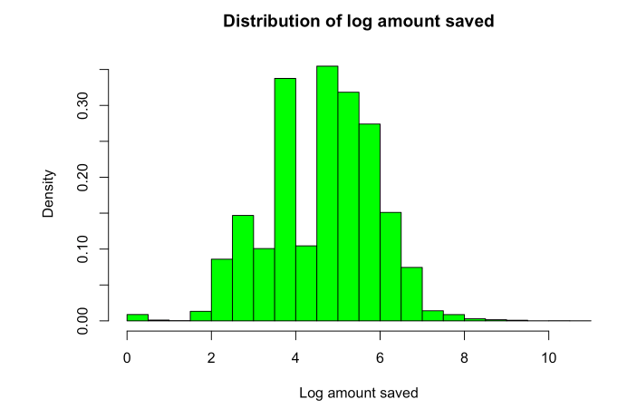
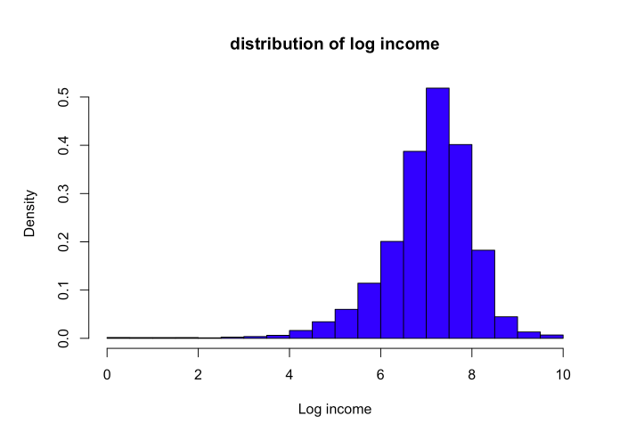
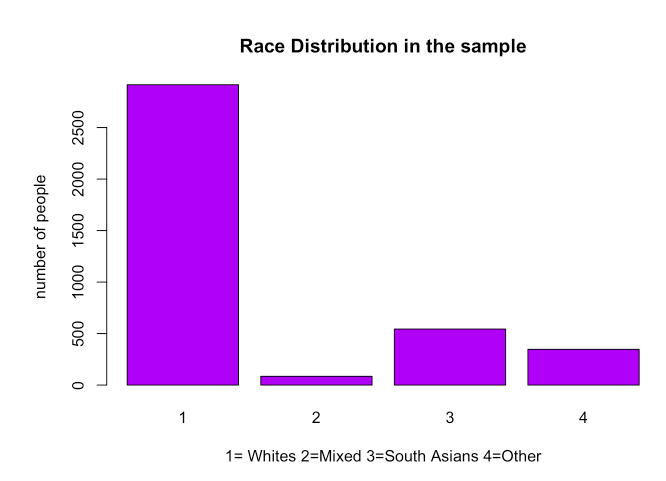
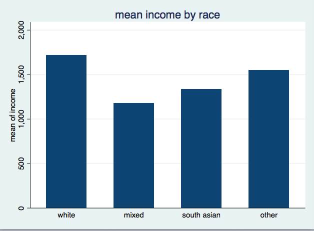
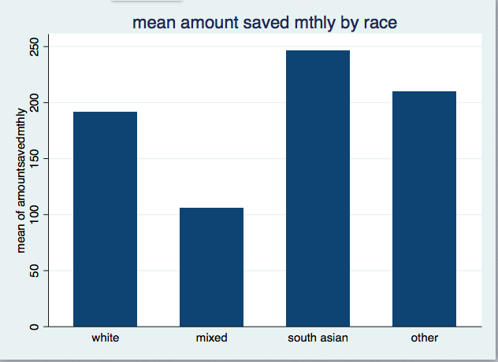

Appendices
Appendix 1: Descriptive statistics for independent and dependent variables
Numeric Variables
| Variable | Mean | SD | Min.Value | Max.Value | Num of Obs |
|---|---|---|---|---|---|
| Amountsavedmonthly | 217.31 | 576.74 | 1 | 40,000 | 18,515 |
| Age | 46.63 | 18.45 | 16 | 102 | 54,597 |
| Income | 1840.825 | 1495.145 | .083 | 15000 | 22,817 |
Categorical Variables
| Variable | Proportion | Num of Obs |
|---|---|---|
| Regular Saver or not | ||
| Regularly saves | 72.4% | 14,869 |
| From time to time | 27.55% | 5,653 |
| Gender | ||
| Male | 45.87% | 25,044 |
| Female | 54.13% | 29,533 |
| Race | ||
| White | 74.92% | 2,916 |
| Mixed | 2.18% | 85 |
| South Asian | 13.9% | 544 |
| Other | 8.9% | 347 |
Appendix 2: Results of Regression A: Testing the relationship between log amount saved monthly and gender, age, income and race
| Variable | Coefficient |
|---|---|
| Female(ref. male) | -0.0685(0.063)+ |
| Age | 0.00021(0.012)+ |
| Age2 | -0.0007(0.0001)+ |
| LogIncome | 0.49(0.03)*** |
| Race(ref.White) | |
| Mixed | -0.235(0.249)+ |
| South Asians | 0.284(0.15)* |
| Other | 0.191(0.122)+ |
| Constant | 1.28(0.211)*** |
| N | 1120 |
| R^2 | 18% |
| () standard error |
Results of Regression B: Testing the relationship between regularity of saving and gender, age, income and race
| Variable | Coefficient |
|---|---|
| Female(ref. male) | 0.233(0.127)+ |
| Age | 0.036(0.022)+ |
| Age2 | -0.0003(0.0002)+ |
| LogIncome | 0.276(0.062)*** |
| Race(ref.White) | |
| Mixed | -0.353(0.474)+ |
| South Asians | -0.654(0.214)** |
| Other | -0.188(0.238)+ |
| Constant | -1.77(0.406)***. |
| N | 1254 |
| () standard error |
Appendix 3: Results for the Wald-Chi2 Test
| Variable | Pr(>Chi) |
|---|---|
| Female(ref. male) | 0.259+ |
| Age | 0.004** |
| Age2 | 0.000*** |
| LogIncome | 0.000*** |
| Race | 0.022 * |


  

Graph 4

Graph 5